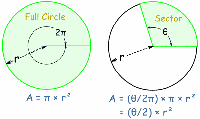

Area of a Sector:
You can work out the Area of a Sector by comparing its angle to the angle of a
full circle.
A circle has an angle of 2π and an Area of: πr2

A Sector with an angle of θ (instead of 2π) has an Area of : (θ/2π) × πr2
Which can be simplified to : (θ/2) × r2
Area of Sector = θ /2 × r2 (when θ is in radians)
Area of Sector = θ × π/360 × r2 (when θ is in degrees)